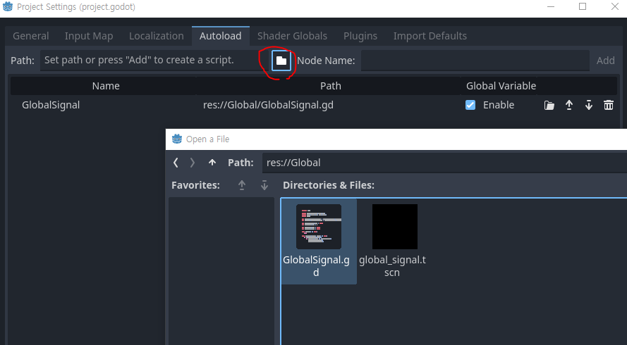
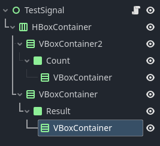

이 페이지에서는 오토로드를 활용하여 런타임이 실행 시,
웹과 상호작용하는 기능을 자동으로 불러와 전역으로 신호를 방출하고 코드를 실행하는 기능을 구현하는 방법에 대하여 알아보겠습니다.
버튼을 누르면 오토로드가 사용자의 상호작용을 감지하여 신호를 방출하고, 패널에 텍스트를 띄우는 형식으로 간단하게 구현할 것입니다.
먼저 Autoload를 만들어 적용해보겠습니다. 아래와 같이 스크립트를 만들어주고 스크립트의 이름을 GlobalSignal, 이미 GloblaSignal 파일이 있다면 WebSignal로 이름을 정합니다.
생성한 스크립트를 패스로 불러온 다음 Project Settings > Autoload 추가합니다.

GlobalSignal은 보통 직접적인 기능을 하지 않고 다른 노드에 의해 신호를 방출당하게 됩니다. 하지만 JavaScript는 GDScript의 신호를 방출할 수 없습니다.
따라서 이를 이용해 우회적인 방법으로 반응을 구현해야 하기에 GloblaSignal이나 다른 오토로드 스크립트를 생성하여 만드는 것입니다.
먼저 웹에서 사용자와 상호작용할 버튼을 만든 뒤, 해당 버튼을 누르면 값이 바뀔 변수와 이벤트를 구현합니다.
1 2 3 4 5 6 7 8 | var btn = document.getElementById("btn") var is_pressed = false btn.onclick = btn_press function test_btn_press() { is_pressed = !is_pressed } | cs |
이제 버튼이 눌렸을 때, GDScript에서 is_pressed의 값이 바뀐 걸 감지하고 신호를 방출하겠습니다.
1 2 3 4 5 6 7 8 9 10 11 12 13 14 15 16 17 18 19 20 | signal button_on_click(count:int) var document:JavaScriptObject = JavaScriptBridge.get_interface("document") var window:JavaScriptObject = JavaScriptBridge.get_interface("window") var emit_count:int = 0 var add_label_btn:bool = false func _process(delta: float) -> void: if OS.has_feature('web'): if document.title == "GlobalSignal": monitoring_press_btn() func monitoring_press_btn() -> void: var _btn:bool = JavaScriptBridge.get_interface("is_pressed").valueOf() if _btn != add_label_btn: add_label_btn = _btn emit_count += 1 button_on_click.emit(emit_count) | cs |
이제 본격적으로 메인씬을 만들어봅시다. 노드트리가 다소 복잡할 수 있지만, 가시성을 위하여 아래와 같이 구성하겠습니다.
Control노드에 스크립트를 붙이고 다음과 같이 코드를 추가합니다.
1 2 3 4 5 6 7 8 9 10 11 12 13 14 15 | extends Control @onready var count_panel: VBoxContainer = $HBoxContainer/VBoxContainer2/Count/VBoxContainer @onready var result_panel: VBoxContainer = $HBoxContainer/VBoxContainer/Result/VBoxContainer func _ready()->void: GlobalSignal.button_on_click.connect(on_press_test_button) func on_press_test_button(count:int) -> void: var count_label:Label = Label.new() count_label.text = str(count) + ":" count_panel.add_child(count_label) var result_label:Label = Label.new() result_label.text = "You Pressed The Button" result_panel.add_child(result_label) | cs |
웹으로 내보낸 뒤, 횟수와 메세지가 잘 출력되는지 확인해보세요.
추가적으로 모든 메세지를 지우는 코드 또한 아래에 추가하고 같은 형식으로 버튼을 하나 더 만들어 기능을 구현할 수 있습니다.
1 2 3 4 5 | func clear() -> void: for node in count_panel.get_children(): node.queue_free() for node in result_panel.get_children(): node.queue_free() | cs |